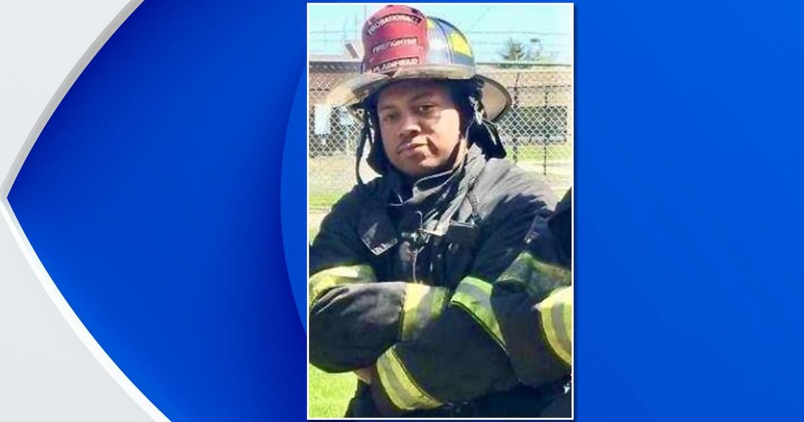

Celebration of life planned for Firefighter Marques Hudson, who died battling blaze in PlainfieldPLAINFIELD, N.J. - A celebration of life has been planned for one of Plainfield's bravest. Firefighter Marques Hudson, 32, . "We are a family grappling with an irreplaceable loss," Plainfield Mayor Adrian Mapp said. Hudson is the first line-of-duty death in the history of Plainfield's fire department. Gov. Phil Murphy ordered , who is survived by three children. Now, a viewing and celebration of life have been planned. The viewing will take place from 6 p.m.-10 p.m. Friday at Plainfield High School at 950 Park Avenue. The celebration of life will take place Saturday at 11 a.m., also at Plainfield High School. for more features. |
 |